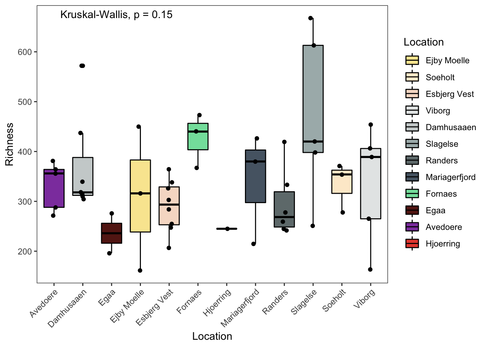
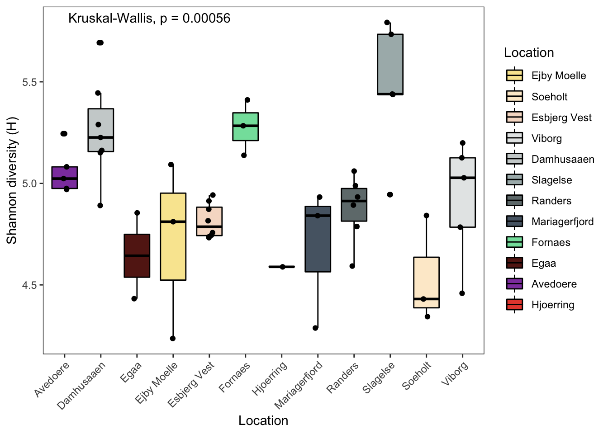
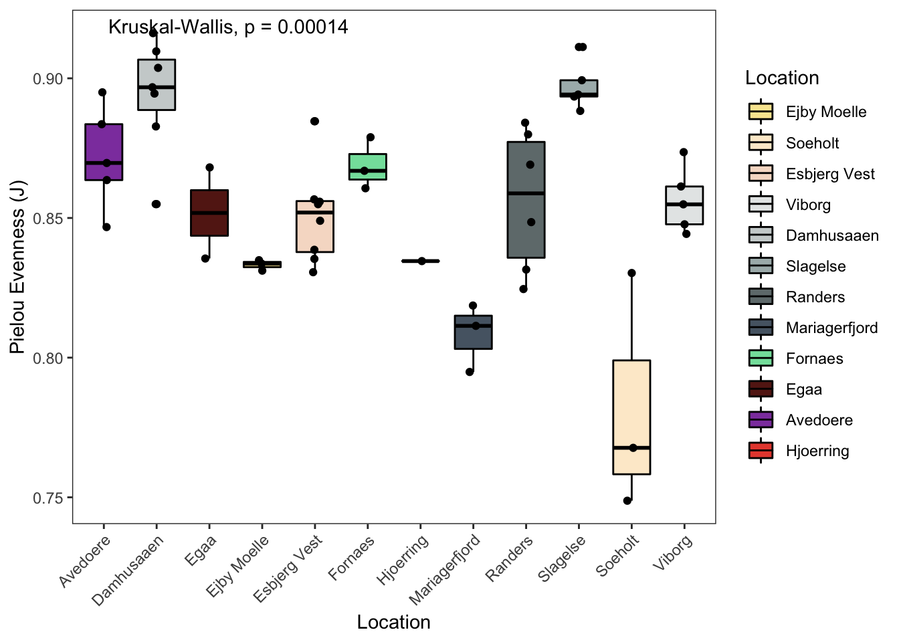
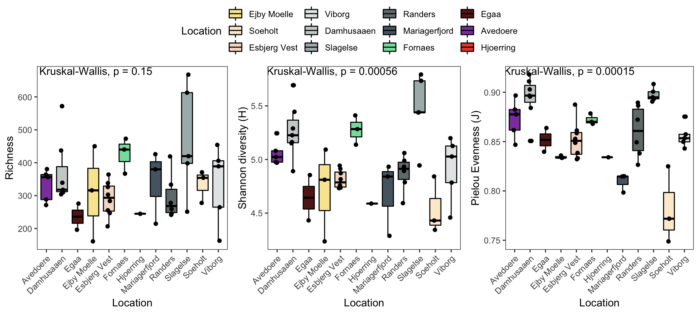
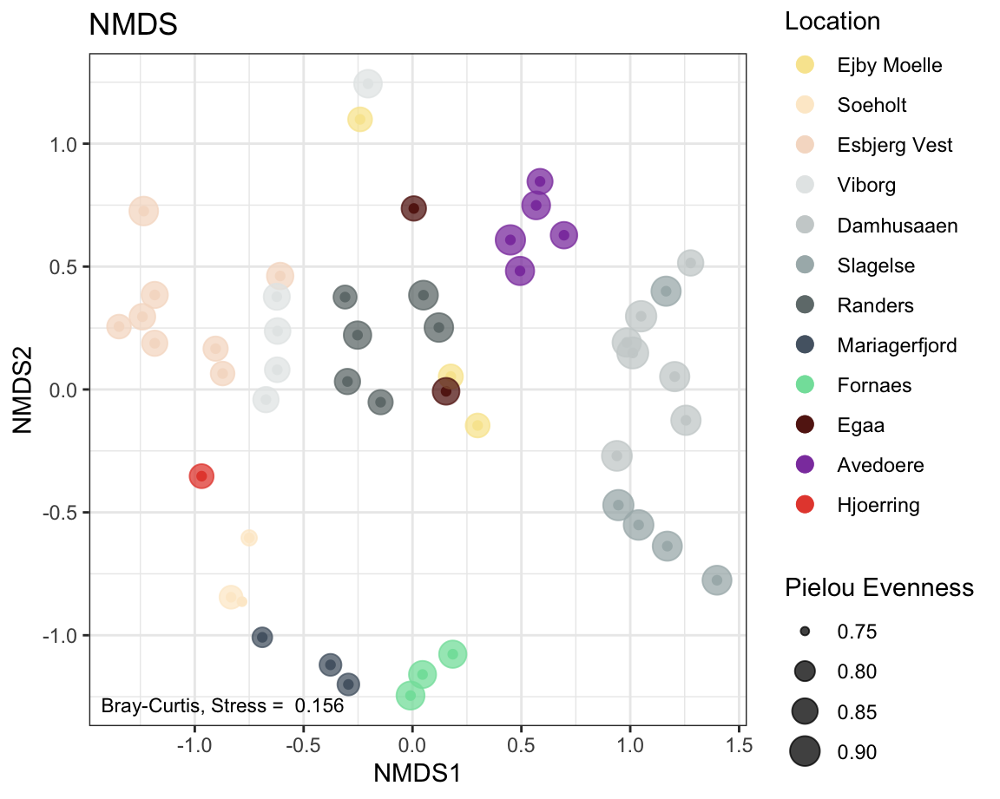
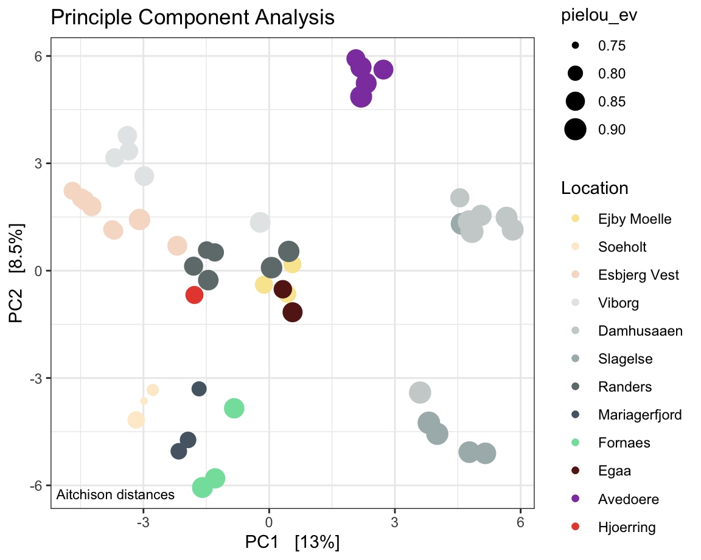
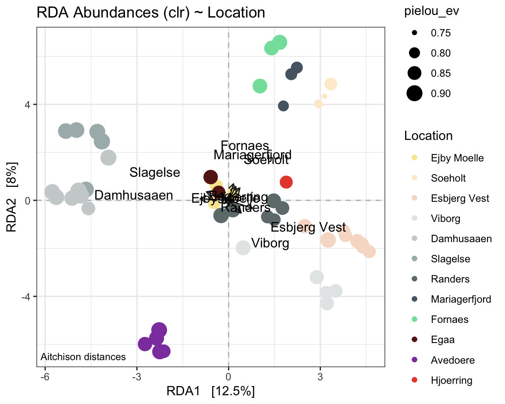
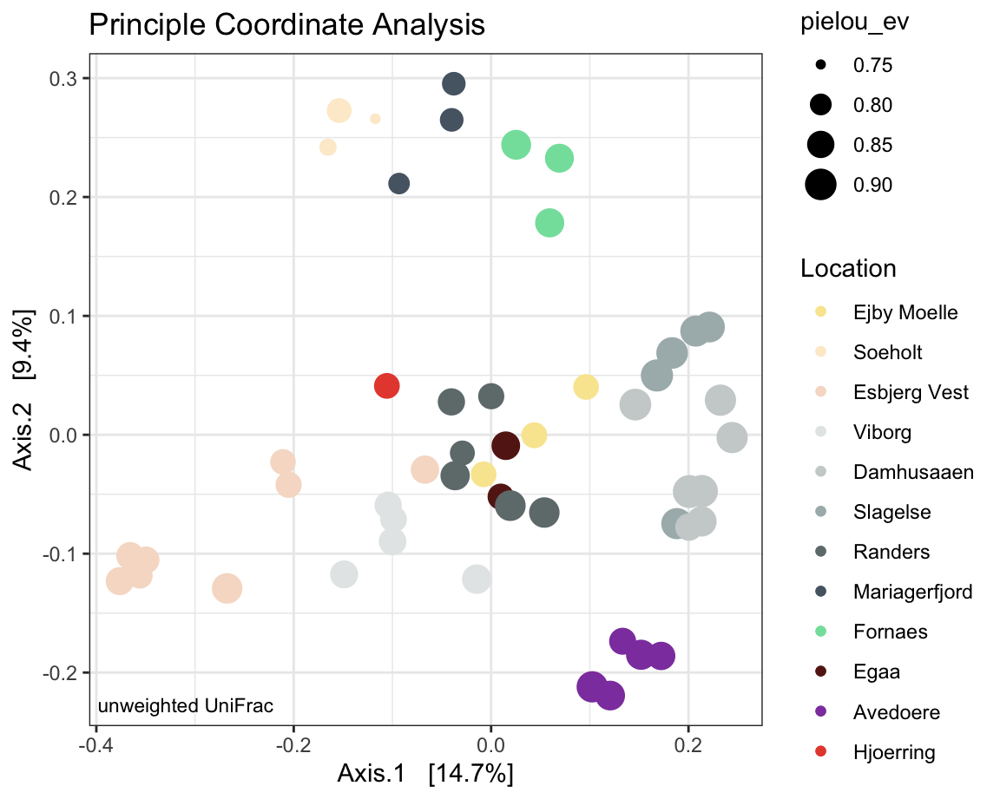
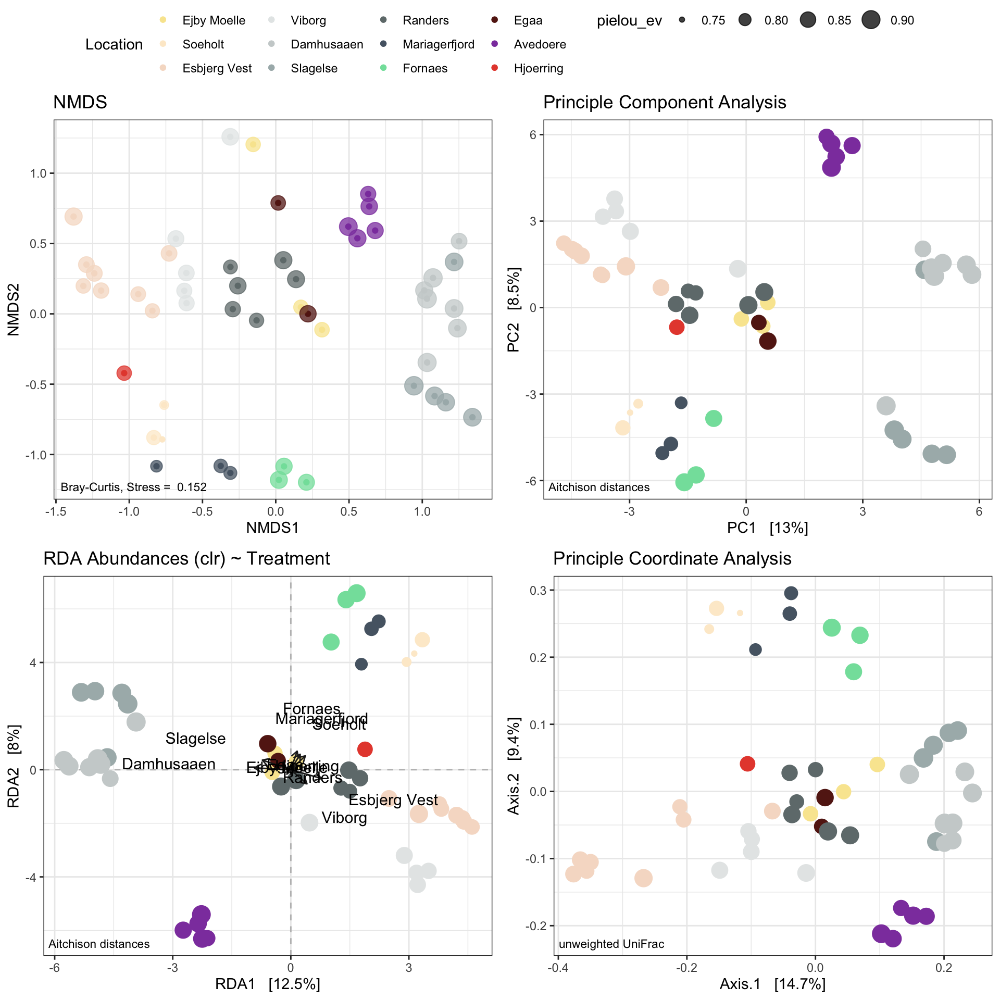

Chapter 6 Plotting diversity
Some visualisations of alpha and beta diversity.
6.1 Introduction
This chapter introduces you to a basic workflow for plotting alpha and beta diversity using phyloseq and ggplot. It provides examples for loading the phyloseq object from a previously saved .rds file, then how to calculate and include alpha diversity metrics into the sample_data of the phyloseq object, and finally how to plot some of these metrics, individually or combined.
Furthermore, beta diversity, i.e. four different type of ordinations are plotted. The examples, include non-metric dimensional scaling on Bray-Curtis dissimilaries, Principal Component Analysis (Aitchison distance), Redundancy Analysis ( Aitchison) and a Principal Coordinate Analysis on unweighted uniFrac distances.
The stats behind the individual metrics are not discussed. If you want to learn more about the various options to analyse your amplicon-derived diversity, perhaps start here: https://sites.google.com/site/mb3gustame/home, the GUide to STatistical Analysis in Microbial Ecology (GUSTA ME). This is one of many other useful links and resources. Some others are listed in chapter 1.
Prior to establishing alpha diversity indices, as well as Bray-Curtis dissimilarities, we will stick to rarefying sequences to a specific library size (library size = sum of sequence counts of a sample) to normalise the data and prevent bias due to library size. Usually, this is done using the smallest library size of all samples. If you want to learn more about rarefying I recommend this paper here: Enhancing diversity analysis by repeatedly rarefying next generation sequencing data describing microbial communities. We will follow the recommendations from the authors of this paper to resample without replacement.
Other normalisation methods are also possible and it is up to you, the analyst, to understand and decide on the appropriate methods. I found centred-log ratios (Aitchison distances) also intuitive in interpretation, which are included into the workflow below in a PCA and RDA. Log-ratios are further discussed in the paper Microbiome Datasets Are Compositional: And This Is Not Optional.
In fact, using different types of normalisation, dissimilarities or distances, while providing different types of information, may complement each other and help in interpretation of your data.
6.1.1 Prerequisites
- a phyloseq object; either read in from a pre-saved
.rdsfile or created as described in chapter 5.
Time to get started…
6.2 Workflow
6.2.1 Packages
Install the following packages if not already.
# BiocManager::install("microbiome") If needed
library(phyloseq)
library(ggpubr) # a handy helper package for ggplots
library(tidyverse)
theme_set(theme_bw()) # setting the theme for ggplots
library(vegan)
library(microbiome)
6.2.2 Load phyloseq object
For detail on how to create a phyloseq object please see chapter 5.
# reading in a previously saved phyloseq object
ps <- readRDS('ps_ProjectX_2022July')
ps # get an overview of number of taxa and samples contained in the phyloseq object## phyloseq-class experiment-level object
## otu_table() OTU Table: [ 4218 taxa and 51 samples ]
## sample_data() Sample Data: [ 51 samples by 15 sample variables ]
## tax_table() Taxonomy Table: [ 4218 taxa by 7 taxonomic ranks ]
## phy_tree() Phylogenetic Tree: [ 4218 tips and 4217 internal nodes ]
Check the metadata contained in the phyloseq object. This is the original metadata from the public repository where the FastQ files were downloaded from (Sequence Read Archives).
There are 15 columns containing some character (chr), factor or integer (int) variables.
metadf <- data.frame(sample_data(ps))
str(metadf)## 'data.frame': 51 obs. of 15 variables:
## $ Assay.Type : chr "AMPLICON" "AMPLICON" "AMPLICON" "AMPLICON" ...
## $ Bases : int 13254234 24196788 15758554 20048406 37634632 43555904 35107436 13888140 23172184 35065898 ...
## $ BioProject : chr "PRJNA645373" "PRJNA645373" "PRJNA645373" "PRJNA645373" ...
## $ Bytes : int 9235913 16404070 10758456 13009806 24207581 27963491 22585685 9388862 15125835 22520074 ...
## $ Organism : chr "anaerobic digester metagenome" "anaerobic digester metagenome" "anaerobic digester metagenome" "anaerobic digester metagenome" ...
## $ collection_date: chr "30/11/16" "9/3/16" "17/3/16" "5/12/16" ...
## $ loc : chr "Ejby Moelle" "Soeholt" "Esbjerg Vest" "Viborg" ...
## $ Reactor : Factor w/ 10 levels "1A","1B","2B",..: 4 4 6 7 7 5 5 5 4 4 ...
## $ Type : chr NA NA NA "DS" ...
## $ Purpose : chr "reactorfoampotentials" "reactorfoampotentials" "reactorfoampotentials" "foamnofoamcomparison" ...
## $ Experiment : chr "SRX8715180" "SRX8715169" "SRX8715158" "SRX8715151" ...
## $ lat_lon : chr "55.398077 N 10.415041 E" "56.175302 N 9.582588 E" "55.488235 N 8.430655 E" "56.425367 N 9.4527943 E" ...
## $ ReleaseDate : chr "2021-01-01T00:00:00Z" "2021-01-01T00:00:00Z" "2021-01-01T00:00:00Z" "2021-01-01T00:00:00Z" ...
## $ Sample.Name : chr "16SAMP-17236" "16SAMP-17231" "16SAMP-17233" "MQ170915-14" ...
## $ Location : Factor w/ 12 levels "Avedoere","Damhusaaen",..: 4 11 5 12 12 12 12 2 11 11 ...
6.2.3 Pre-filter, rarefy and calculate diversity
Now the diversity indices can be calculated and added to the metadata of the phyloseq object for plotting. First, the abundances are pre-filtered (as shown in the previous chapter), then the ASV abundances are randomly resampled with phyloseq::rarefy_even_depth, such that all samples have the same number of ASVs.
The diversity indices are then calculated with phyloseq::estimate_richness based on these evenly resampled abundances. The dataframe that is created containing the range of indices is then added to the existing metadata of the phyloseq for plotting.
# some additional quality filtering - repeating steps from previous chapter.
ps.flt = prune_taxa(taxa_sums(ps) >= 5, ps) #minimum reads per feature
ps.flt = subset_taxa(ps.flt , !is.na(Phylum) & !Phylum %in% c(""))
ps.flt <- ps.flt %>%
subset_taxa(Kingdom == "Bacteria" & Family != "Mitochondria" & Class != "Chloroplast")
ps.flt ## phyloseq-class experiment-level object
## otu_table() OTU Table: [ 3853 taxa and 51 samples ]
## sample_data() Sample Data: [ 51 samples by 15 sample variables ]
## tax_table() Taxonomy Table: [ 3853 taxa by 7 taxonomic ranks ]
## phy_tree() Phylogenetic Tree: [ 3853 tips and 3852 internal nodes ]# confirming minimum sample size
min(colSums(otu_table(ps.flt)))## [1] 9770# rarefy - required before measuring alpha diversity.
# This step is to create an abundance table, where the all samples are randomly
# resamples such that all samples have the same number of ASVs.
# It removes any bias but number of re-samples is based on the sample with
# smallest number of ASVs so one has to check and filter beforehand in case
# there are samples with very different number of ASVs. I am generally going
# by a 10x rule. If the lowest number of ASVs is 10x lower than the sample with
# highest number of ASVs, then I keep that sample in for alpha diversity assessments.
ps_rare <- phyloseq::rarefy_even_depth(ps.flt,
sample.size = min(colSums(otu_table(ps.flt))),
rngseed = TRUE,
replace = FALSE, #without replacement
trimOTUs = TRUE)
# check rarefied phyloseq object
# ps_rare (not run)
# phyloseq-class experiment-level object
# otu_table() OTU Table: [ 3801 taxa and 51 samples ]
# sample_data() Sample Data: [ 51 samples by 15 sample variables ]
# tax_table() Taxonomy Table: [ 3801 taxa by 7 taxonomic ranks ]
#phy_tree() Phylogenetic Tree: [ 3801 tips and 3800 internal nodes ]
# Create diversity indices
div.df <- phyloseq::estimate_richness(ps_rare)
# add sample names
div.df$`#SampleID` <- phyloseq::sample_names(ps.flt)
# add diversity indices to phyloseq object
metadf <- data.frame(sample_data(ps.flt)) # export metadata first
metadf <- metadf %>%
rownames_to_column("#SampleID") %>%
left_join(div.df, by = "#SampleID") %>%
column_to_rownames("#SampleID") # add the diversity indices (columns) to the metadata
# add pilou evenness (see calculation in "Numerical Ecology with R - Bocard et al")
metadf$pielou_ev <- div.df$Shannon/log(div.df$Observed)
# replace metadata with temp meta.df which includes the diversity indices
ps.flt@sam_data <- sample_data(metadf)
ps_rare@sam_data <- sample_data(metadf)
# this replaced the old metadata with new metadata that includes the diversity
# indices for this phyloseq object
str(data.frame(sample_data(ps.flt)))## 'data.frame': 51 obs. of 25 variables:
## $ Assay.Type : chr "AMPLICON" "AMPLICON" "AMPLICON" "AMPLICON" ...
## $ Bases : int 13254234 24196788 15758554 20048406 37634632 43555904 35107436 13888140 23172184 35065898 ...
## $ BioProject : chr "PRJNA645373" "PRJNA645373" "PRJNA645373" "PRJNA645373" ...
## $ Bytes : int 9235913 16404070 10758456 13009806 24207581 27963491 22585685 9388862 15125835 22520074 ...
## $ Organism : chr "anaerobic digester metagenome" "anaerobic digester metagenome" "anaerobic digester metagenome" "anaerobic digester metagenome" ...
## $ collection_date: chr "30/11/16" "9/3/16" "17/3/16" "5/12/16" ...
## $ loc : chr "Ejby Moelle" "Soeholt" "Esbjerg Vest" "Viborg" ...
## $ Reactor : Factor w/ 10 levels "1A","1B","2B",..: 4 4 6 7 7 5 5 5 4 4 ...
## $ Type : chr NA NA NA "DS" ...
## $ Purpose : chr "reactorfoampotentials" "reactorfoampotentials" "reactorfoampotentials" "foamnofoamcomparison" ...
## $ Experiment : chr "SRX8715180" "SRX8715169" "SRX8715158" "SRX8715151" ...
## $ lat_lon : chr "55.398077 N 10.415041 E" "56.175302 N 9.582588 E" "55.488235 N 8.430655 E" "56.425367 N 9.4527943 E" ...
## $ ReleaseDate : chr "2021-01-01T00:00:00Z" "2021-01-01T00:00:00Z" "2021-01-01T00:00:00Z" "2021-01-01T00:00:00Z" ...
## $ Sample.Name : chr "16SAMP-17236" "16SAMP-17231" "16SAMP-17233" "MQ170915-14" ...
## $ Location : Factor w/ 12 levels "Avedoere","Damhusaaen",..: 4 11 5 12 12 12 12 2 11 11 ...
## $ Observed : num 161 354 247 265 389 454 406 304 278 371 ...
## $ Chao1 : num 161 356 247 266 395 ...
## $ se.chao1 : num 0 2.2689 0.0832 1.0272 3.914 ...
## $ ACE : num 161 357 247 266 395 ...
## $ se.ACE : num 4.6 9.28 7.43 7.72 9.83 ...
## $ Shannon : num 4.24 4.84 4.74 4.78 5.03 ...
## $ Simpson : num 0.966 0.973 0.982 0.983 0.986 ...
## $ InvSimpson : num 29.6 37.7 56.8 57.8 70.6 ...
## $ Fisher : num 27.4 72 46.1 50.2 81 ...
## $ pielou_ev : num 0.834 0.825 0.861 0.857 0.843 ...6.2.4 Colors
# You can check Hex codes with help of https://htmlcolorcodes.com/
cols <- c("#F9E79F", "#FDEBD0", "#F6DDCC", "#E5E8E8", "#CCD1D1", "#AAB7B8",
"#707B7C", "#566573","#82E0AA", "#641E16", "#8E44AD", "#E74C3C")
# you can also name each colour according to your treatment.
# This will help ggplot to associated the same colour for each treatment across
# different ggplots. For example, if we want to show different colour by location
# in this dataset:
names(cols) <- unique((data.frame(sample_data(ps.flt)))$Location)
cols## Ejby Moelle Soeholt Esbjerg Vest Viborg Damhusaaen
## "#F9E79F" "#FDEBD0" "#F6DDCC" "#E5E8E8" "#CCD1D1"
## Slagelse Randers Mariagerfjord Fornaes Egaa
## "#AAB7B8" "#707B7C" "#566573" "#82E0AA" "#641E16"
## Avedoere Hjoerring
## "#8E44AD" "#E74C3C"6.2.5 Richness
p1 <- data.frame(phyloseq::sample_data(ps.flt)) %>%
ggpubr::ggboxplot(., x = "Location",
y = "Observed",
fill = "Location",
ylab = "Richness",
xlab = "Location",
palette = cols) +
theme_bw() +
theme( panel.grid.major = element_blank(), panel.grid.minor = element_blank() ) +
geom_jitter(width = 0.1) +
theme(axis.text.x = element_text(angle = 45, hjust = 1)) +
# theme(axis.title.x=element_blank(), # Options
# axis.text.x=element_blank(),
# axis.ticks.x=element_blank()) +
ggpubr::stat_compare_means(method = "kruskal",label.x = 2)
p1
6.2.6 Shannon
# Shannon
p2 <- data.frame(phyloseq::sample_data(ps.flt)) %>%
ggpubr::ggboxplot(., x = "Location",
y = "Shannon",
fill = "Location",
ylab = "Shannon diversity (H)",
xlab = "Location",
palette = cols) +
theme_bw() +
theme( panel.grid.major = element_blank(), panel.grid.minor = element_blank() ) +
geom_jitter(width = 0.1) +
theme(axis.text.x = element_text(angle = 45, hjust = 1)) +
# theme(axis.title.x=element_blank(), # Options
# axis.text.x=element_blank(),
# axis.ticks.x=element_blank()) +
ggpubr::stat_compare_means(method = "kruskal",label.x = 2)
p2
6.2.7 Pielou’s evenness
# Pielou
p3 <- data.frame(phyloseq::sample_data(ps.flt)) %>%
ggpubr::ggboxplot(., x = "Location",
y = "pielou_ev",
fill = "Location",
ylab = "Pielou Evenness (J)",
xlab = "Location",
palette = cols) +
theme_bw() +
theme( panel.grid.major = element_blank(), panel.grid.minor = element_blank() ) +
geom_jitter(width = 0.1) +
theme(axis.text.x = element_text(angle = 45, hjust = 1)) +
# theme(axis.title.x=element_blank(), # Options
# axis.text.x=element_blank(),
# axis.ticks.x=element_blank()) +
ggpubr::stat_compare_means(method = "kruskal",label.x = 2)
p3
6.2.8 Combined plotting
#pdf(NULL)
g1 <- ggpubr::ggarrange(p1, p2, p3, common.legend = TRUE, nrow = 1, legend = 'top')
#x = dev.off()
g1
6.2.9 NMDS
physeqNMDS <- ps_rare # We are using the rarefied abundances as explained in the intro
#ordination
ordination <- phyloseq::ordinate(physeqNMDS , "NMDS", distance = 'bray') # using Bray-Curtis dissimilarities here.
label <- round(ordination$stress,3) # stress label
#plotting ordination
NMDSplot <- phyloseq::plot_ordination(physeqNMDS,
ordination ,
color = "Location",
#shape = "Reactor",
# option to add shapes as data symbols
title = "NMDS") +
geom_point(aes(size = pielou_ev), alpha = 0.75) + # shape size in proportion to Pielou Evenness, also make transparent
annotate(geom = 'text', label = paste("Bray-Curtis, Stress = ", label),
x = -Inf, y = -Inf, hjust = -0.05, vjust = -1, size = 3) +
scale_color_manual(values = cols)
NMDSplot
6.2.10 PCA
physeqPCA <- ps.flt # just to keep it separate.
# normalisation and transform using the microbiome package
# I chose a centred log-ratio transform and a principle component analysis in a euclidean space.
physeqPCA <- microbiome::transform(physeqPCA, "clr")
#ordination
ordination <- phyloseq::ordinate(physeqPCA , "RDA") # useing the centred-log transformed abundances
#plotting ordination
PCAplot <- phyloseq::plot_ordination(physeqPCA,
ordination ,
color = "Location",
#shape = "Reactor",
# option to add shapes as data symbols
title = "Principle Component Analysis") +
geom_point(aes(size = pielou_ev)) + # # shape size in proportion to Pielou Evenness
annotate(geom = 'text', label = paste("Aitchison distances"),
x = -Inf, y = -Inf, hjust = -0.05, vjust = -1, size = 3) +
scale_color_manual(values = cols)
PCAplot
6.2.11 RDA
# PERCENT FILTERVALUE FOR ALL RDAs
pcnt <- 0.25
# FORMULA FOR ALL RDAs
form <- formula(~ Location)
# labels for arrows
# pos for arrows
xarw <- 5
yarw <- 5
# arrow length map
larw <- 1.5
# arrow length map for chromosol rda
larwch <- 1
# fixed width of x axis
xaxis = c(-6.75, 6.5)
# position of annotation
textposx = c(-4.4)
# arrow color
arrowcolor <- "grey13"
physeqPCA <- ps.flt # excluding Heat, H2O2, reference and blank
# normalisation and transform
physeqPCA <- microbiome::transform(physeqPCA, "clr")
#ordination
ordination <- phyloseq::ordinate(physeqPCA, "RDA", "bray", formula = form )
RDAplot <- phyloseq::plot_ordination(physeqPCA, ordination ,
color = "Location") +
geom_hline(yintercept=0, linetype="dashed", color = "gray") +
geom_vline(xintercept=0, linetype="dashed", color = "gray") + # shape size reflective of Pielou
annotate(geom = 'text', label = paste("Aitchison distances"),
x = -Inf, y = -Inf, hjust = -0.05, vjust = -1, size = 3) +
geom_point(aes(size = pielou_ev)) + # shape size in proportion to Pielou Evenness
#scale_colour_gradient(low = colourlow, high = colourhigh) +
ggtitle("RDA Abundances (clr) ~ Location") +
scale_color_manual(values = cols)
# Now add the environmental variables as arrows to either of these p1 or p2
arrowmat <- vegan::scores(ordination, display = "bp")
arrowmat <- data.frame(arrowmat)
#rownames(arrowmat) <- arrowlabel
# Add labels, make a data.frame
arrowdf <- data.frame(labels = rownames(arrowmat), arrowmat)
arrowdf$labels <- arrowdf$labels %>% gsub("Location", "", .) # remove the string "Location" from the labels.
# Define the arrow aesthetic mapping
arrow_map <- aes(xend = larw * RDA1,
yend = larw * RDA2,
x = 0,
y = 0,
shape = NULL,
color = NULL,
label = labels)
label_map <- aes(x = xarw * RDA1,
y = yarw * RDA2,
shape = NULL,
color = NULL,
label = labels)
arrowhead = arrow(length = unit(0.02, "npc"))
RDAplot <-RDAplot +
geom_segment(
mapping = arrow_map,
size = .5,
data = arrowdf,
color = arrowcolor,
arrow = arrowhead) +
geom_text(
mapping = label_map,
size = 4,
data = arrowdf,
show.legend = FALSE)
RDAplot
# save figure for publication
# ggsave("RDA.png", height=6, width=7.5, units='in', dpi=600)
#knitr::include_graphics("./RDA.png")
6.2.12 Unweighted uniFrac
UniFrac distances are derived from phylogenetic distances between ASVs, which means that a phylogenetic tree needs to be included into the phyloseq object.
physeqPcOA <- ps.flt # just to keep it separate.
#ordination
ordination <- phyloseq::ordinate(physeqPcOA ,
"PCoA",
distance = 'unifrac') # using just presence and absence (unweighted) dissimilarities here.
#plotting ordination
PCOAplot <- phyloseq::plot_ordination(physeqPcOA,
ordination ,
color = "Location",
#shape = "Reactor",
# option to add shapes to data symbols
title = "Principle Coordinate Analysis") +
geom_point(aes(size = pielou_ev)) + # shape size reflective of Pielou
annotate(geom = 'text', label = paste("unweighted UniFrac"),
x = -Inf, y = -Inf, hjust = -0.05, vjust = -1, size = 3) +
scale_color_manual(values = cols)
PCOAplot
6.2.13 Combined plotting
#pdf(NULL)
g2 <- ggpubr::ggarrange(NMDSplot, PCAplot, RDAplot, PCOAplot,
common.legend = TRUE, nrow = 2, ncol = 2, legend = 'top')
#x = dev.off()
g2
6.2.14 Save plots to png and pdf
# either as png or pdf
ggsave("alphadiversity.png", plot = (g1), height=4, width=10, units='in', dpi=600)
ggsave("alphadiversity.pdf", plot = (g1), height=4, width=10, units='in', dpi=600)
ggsave("betadiversity.png", plot = (g2), height=10, width=10, units='in', dpi=600)
ggsave("betadiversity.pdf", plot = (g2), height=10, width=10, units='in', dpi=600)Note: This code is an amalgamation from various sources. Apart from putting it together into a pipeline I do not take credit for it.